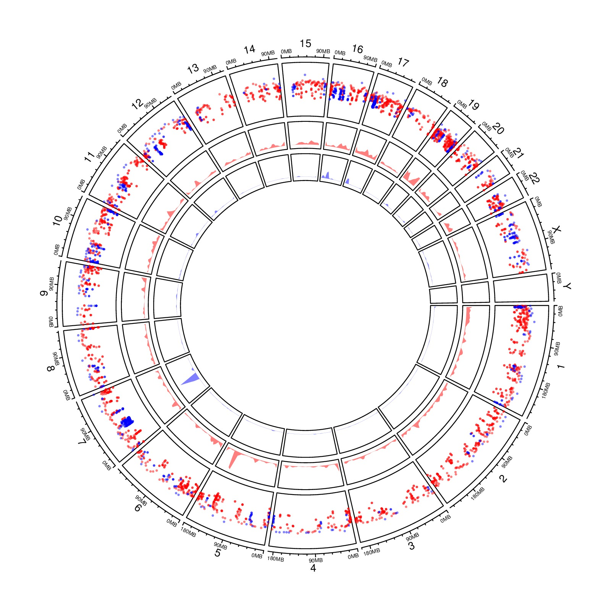

library(circlize)
load(paste(system.file(package = "circlize"), "/extdata/DMR.RData", sep=""))
# rainfall
circos.initializeWithIdeogram(plotType = c("axis", "labels"))
bed_list = list(DMR_hyper, DMR_hypo)
circos.genomicRainfall(bed_list, pch = 16, cex = 0.4, col = c("#FF000080", "#0000FF80"))
circos.genomicDensity(bed_list[[1]], col = c("#FF000080"), track.height = 0.1)
circos.genomicDensity(bed_list[[2]], col = c("#0000FF80"), track.height = 0.1)
circos.clear()